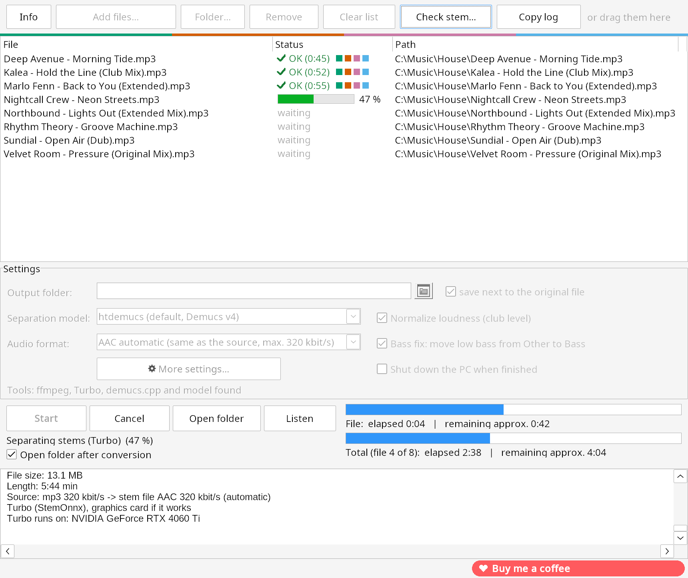

Industry & Network

Network Ping Tool
Excel VBA tool for quickly pinging devices in industrial networks, e.g. Siemens CPUs, HMIs and PLCs over Profinet. Three scan modes, clean cancel, correct IP sorting.
To GitHubSmall, focused tools I build because I needed them myself. Free, open source, no ads.

Turns your MP3, WAV and FLAC files into Traktor stem files (.stem.mp4) with drums, bass, melody and vocals. No Python, no setup. Installer or portable ZIP.
To StemMaker
Excel VBA tool for quickly pinging devices in industrial networks, e.g. Siemens CPUs, HMIs and PLCs over Profinet. Three scan modes, clean cancel, correct IP sorting.
To GitHub